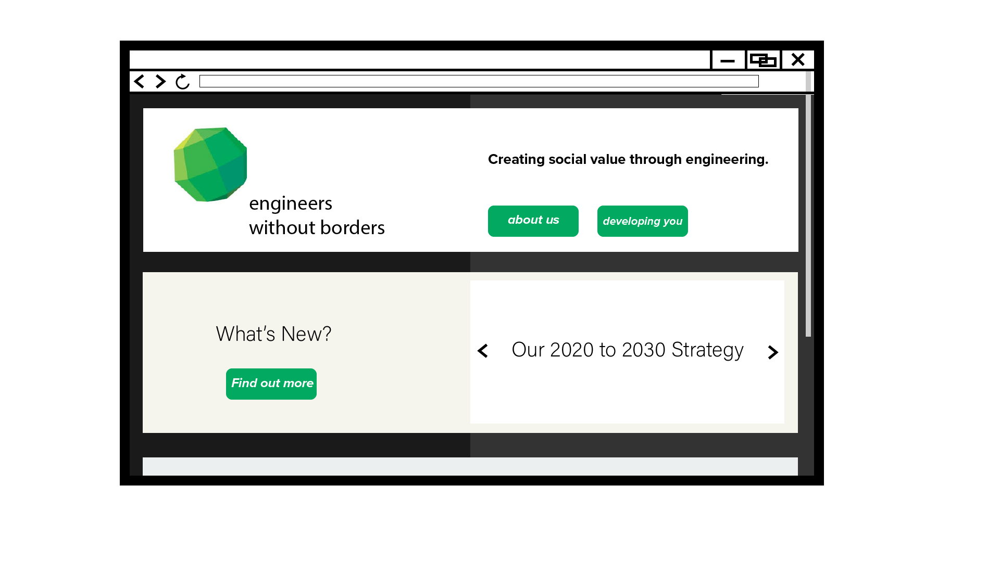
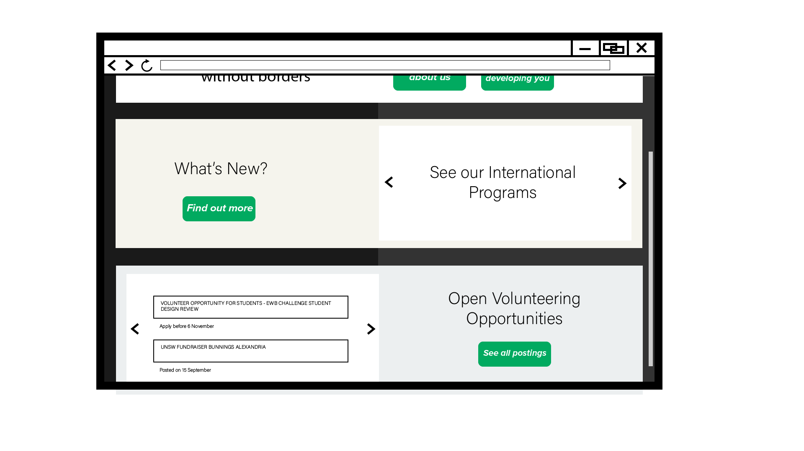
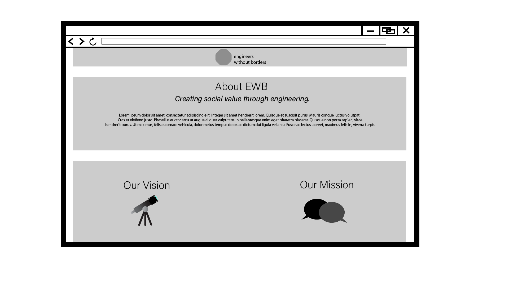
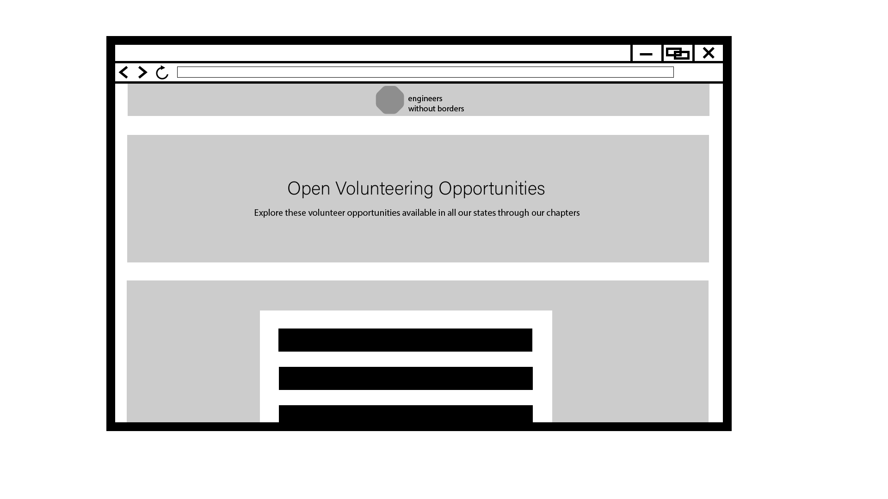

Background
Revisiting the wireframes and mockups
The research in the proposal phase identified three key user profiles that would visit the Engineers without Borders website. The landing page was designed to accomodate each type of user.
The structure of the landing page consists of three sections layered on top of each other. The first section accomodates the 'fledgling first-year', and assists them in understanding what EWB is and what they can get out of it. The second and third sections accomodate more experienced users who have identified the specific kind of information they want prior to landing on the page.
 
Creating the three sections
The three sections were colour coded light/offwhite colours to differentiate between each route or pathway the user would go. The first section has a whitesmoke background, and so do the boxes of the 'about us' page. If you were to click the 'Find out more' button, the boxes which house the information there would maintain that beige colour. This subtly categorises the kind of content on the website based on whether It's for students new to EWB or frequent volunteers.
Adding a header and footer
Initially, the header and footer were omitted from the landing page on purpose. However, they were still included in the wireframes for the 'about us' and 'postings' pages as shown below. This was done to give the site a very simple hierarchy on the landing page, as any user needs or requirements for the three user profiles would exist there. Once they navigate further into a site and wish to return home, they can click the EWB globe logo to do so.
 Upon receiving feedback, users felt that having a header with buttons to key pages felt more comfortable as a directory to a certain page was always visible and within reach. Even in the landing page, the about-us page could be accessed by both the button in the first section as well as the header. Although having two methods of visiting the same part of the site is usually unnecessary, having a header that was consistent across any part of the site seemed easier to use and understand, instead of it appearing on some pages and disappearing on others.
Footer
A footer containing the social media links, contact and other information regarding the organisation was added to provide some background information regarding the company. Both the header and footer provided a users with a sense of control and direction.
Header logo
Initially the entire EWB logo was placed inside the header, but it was difficult to read the font. The logo seemed much cleaner and aesthetic this way.
Form
The form was adjusted a few times. Initially it strongly resembled the signup form of the current EWB website. Users felt like it was better to add an image of students undertaking the program behind the form as it would allow them to envision the kind of community they would be joining.
References
“Engineers Without Borders Australia Logo,” 2018. Engineers Without Borders Australia. Retrieved from: https://www.ewb.org.au.
"Students" 2020. Engineers Without Borders Australia. Retrieved from: https://www.ewb.org.au/get-involved/volunteer/students/
Font Awesome, 2020. Facebook-Square. Available at:
Font Awesome, 2020. linkedin. Available at: Font Awesome, 2020. Twitter-Square. Available at: Font Awesome, 2020. Youtube-Square. Available at: